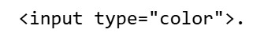

Домашнє завдання №22
-
Регулярні вирази
РішенняЗадача 1. Дано масив рядків. Вивести ті, у яких є цифри (використати метод test та регулярні вирази).
Задача 2. Дано масив рядків. Вивести ті, у яких немає цифр.
Задача 3. Дано масив рядків. Вивести ті, у яких є голосні літери.
Задача 4. Дано масив рядків. Вивести ті, у яких немає голосних літер.
Задача 5. Дано масив рядків. Вивести ті, у яких є або цифра 1 або цифра 3.
Задача 6. Дано рядок тексту, вивести усі числа, які є у тексті.
Задача 7. Дано рядок тексту. Знайти усі знаки пунктуації, які були використано
Задача 8. Дано рядок тексту. Вивести усі складові, які розділені розділовими знаками.
Задача 9. Дано рядок тексту. Перевірити, чи містить він дату у форматі dd.mm.yyyy (dd- день, mm- місяць, yyyy- рік).
Задача 10. Дано рядок тексту. Підрахувати кількість двоцифрових чисел у рядку.
Задача 11. Визначити чи може бути рядок тексту номером банківської картки (приклад: «4142-3433-2323-3434» ). Знайти усі такі номери (при цьому символи “-” можуть бути, а можуть і не бути, тобто так «4142343323233434».
Задача 12. Дано адресу сайту. Визначити, чи є він урядовим (містить домен “gov”, але не обов”язково у кінці). Наприклад: “https://company.gov.ua”
Задача 13. Вибрати усі роки між 2020 та 2049 з отриманого повідомлення
Задача 14. Дано номер телефону. Перевірити, чи є цей телефон телефоном оператора Киїівстар
Задача 15. Користувач вводить прізвище та ім’я в одному рядку через пробіл. Замінити пробіл на дефіс.
Задача 16. Користувач вводить дату у форматі «день.місяць.рік». Отримати рядкове представлення дати у форматі «місяць/рік»
-
Задача 18
РішенняКористувач може змінювати колір фону, що вибирає користувач з використанням
Зберігати цей колір і відновлювати при наступному відкритті. Також зберігати і відображати кількість змін протягом одного сеансу.
-
Задача 19
РішенняЗадача 19. Зберігати у пам’яті список справ, які користувачу треба виконати (зберігати у localStorage). Періодично випадковим чином вибирати якусь з справ і виводити користувачу (з використанням confirm). Якщо користувач натискає на «Ок», то видаляти цю задачу.